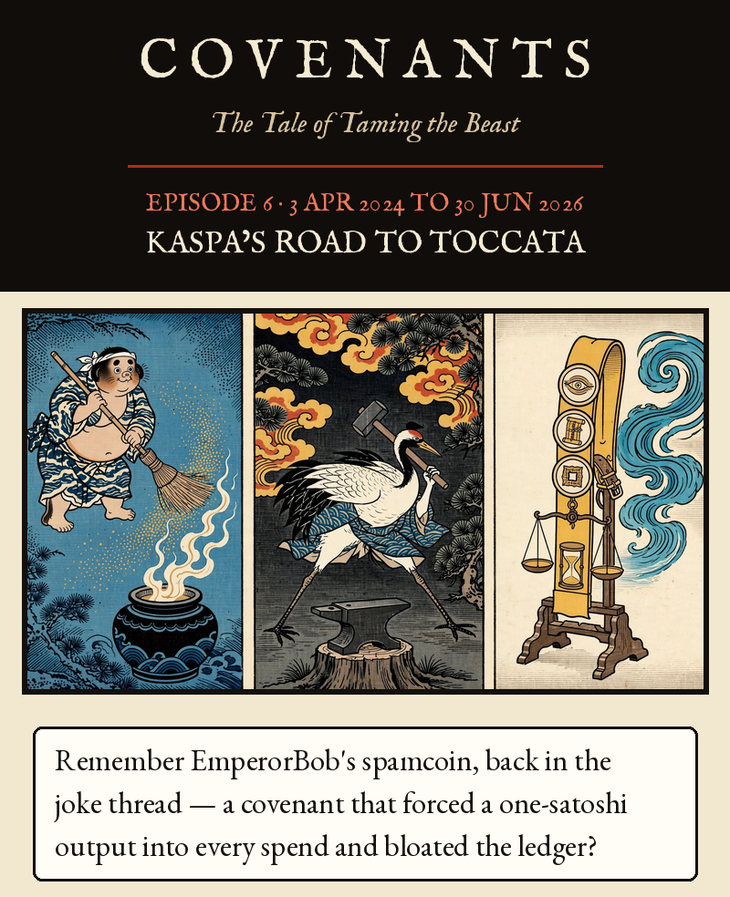
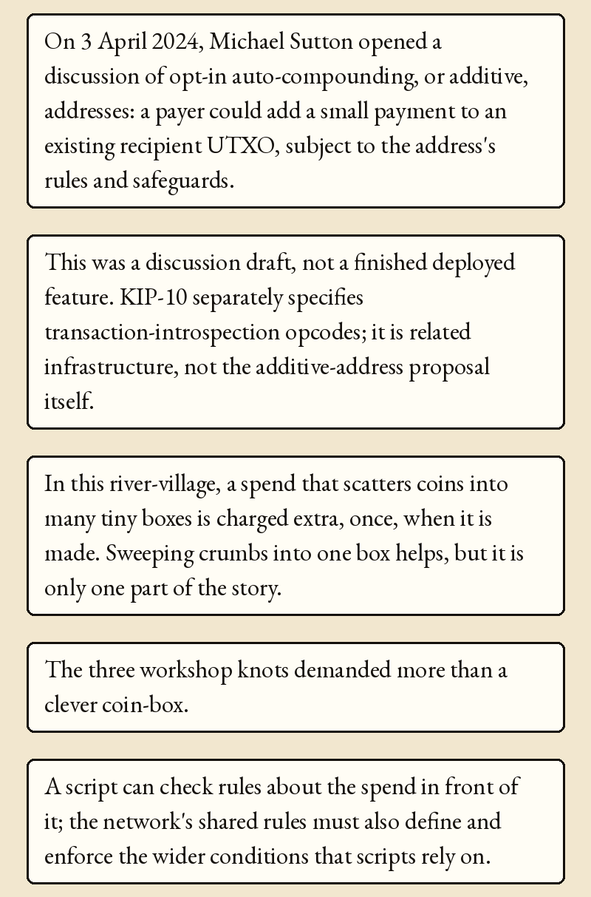
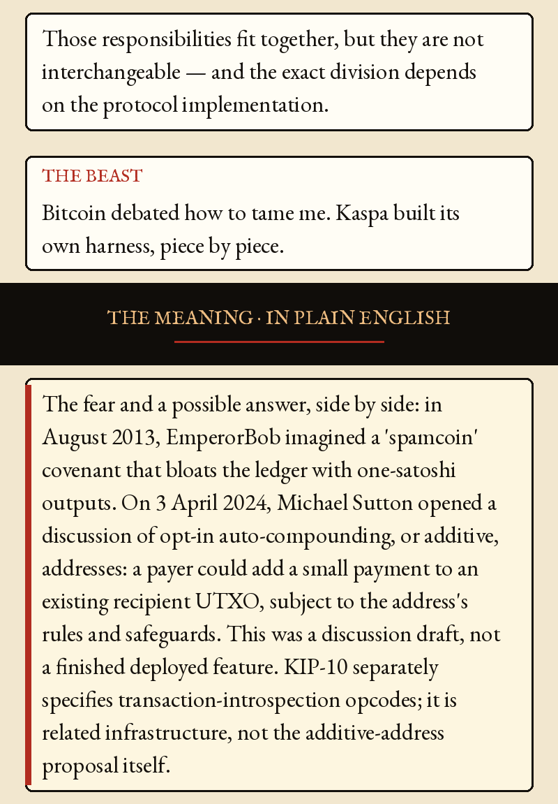
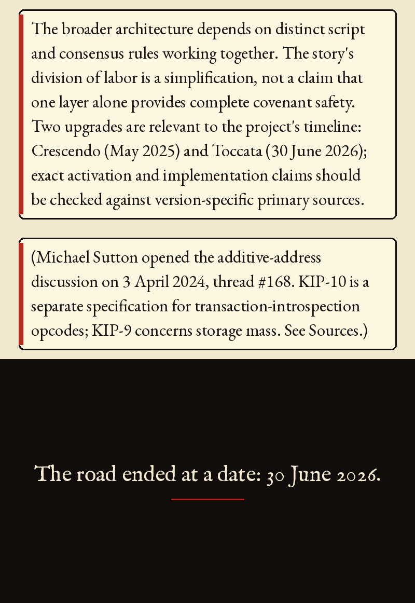
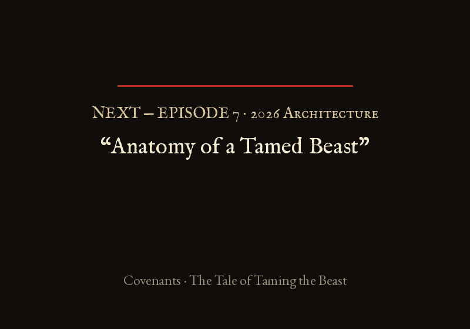

Episode 6 · Kaspa’s Road to Toccata





Episode 6 · Kaspa’s Road to Toccata — 3 Apr 2024 to 30 Jun 2026
Remember EmperorBob's spamcoin, back in the joke thread — a covenant that forced a one-satoshi output into every spend and bloated the ledger? On 3 April 2024, Michael Sutton opened a discussion of opt-in auto-compounding, or additive, addresses: a payer could add a small payment to an existing recipient UTXO, subject to the address's rules and safeguards. This was a discussion draft, not a finished deployed feature. KIP-10 separately specifies transaction-introspection opcodes; it is related infrastructure, not the additive-address proposal itself. In this river-village, a spend that scatters coins into many tiny boxes is charged extra, once, when it is made. Sweeping crumbs into one box helps, but it is only one part of the story.
The three workshop knots demanded more than a clever coin-box. A script can check rules about the spend in front of it; the network's shared rules must also define and enforce the wider conditions that scripts rely on. Those responsibilities fit together, but they are not interchangeable — and the exact division depends on the protocol implementation.
THE BEAST: Bitcoin debated how to tame me. Kaspa built its own harness, piece by piece.
THE MEANING · IN PLAIN ENGLISH
The fear and a possible answer, side by side: in August 2013, EmperorBob imagined a 'spamcoin' covenant that bloats the ledger with one-satoshi outputs. On 3 April 2024, Michael Sutton opened a discussion of opt-in auto-compounding, or additive, addresses: a payer could add a small payment to an existing recipient UTXO, subject to the address's rules and safeguards. This was a discussion draft, not a finished deployed feature. KIP-10 separately specifies transaction-introspection opcodes; it is related infrastructure, not the additive-address proposal itself.
The broader architecture depends on distinct script and consensus rules working together. The story's division of labor is a simplification, not a claim that one layer alone provides complete covenant safety. Two upgrades are relevant to the project's timeline: Crescendo (May 2025) and Toccata (30 June 2026); exact activation and implementation claims should be checked against version-specific primary sources.
(Michael Sutton opened the additive-address discussion on 3 April 2024, thread #168. KIP-10 is a separate specification for transaction-introspection opcodes; KIP-9 concerns storage mass. See Sources.)
The road ended at a date: 30 June 2026.
KIP-10 is 'New Transaction Opcodes for Enhanced Script Functionality' (authors Maxim Biryukov and Ori Newman; status Active): https://github.com/kaspanet/kips/blob/master/kip-0010.md. The additive-address discussion was opened by Michael Sutton on 3 April 2024: https://research.kas.pa/t/auto-compounding-additive-addresses-kip10-draft/168. It is a separate discussion/use case, not the KIP-10 specification itself; the thread date and author are as recorded by this project and were not re-verified in the 4.9 pass. KIP-9 ('Extended mass formula for mitigating state bloat', status Active, read in full 24 Oct 2026) adds a storage mass charged when a transaction is made, higher when it splits value into many small outputs and zero for compounding into equal outputs; the KIP itself contrasts this with state rent. Toccata release notes scheduled mainnet activation at DAA score 474,165,565, approximately 30 June 2026 16:15 UTC: https://github.com/kaspanet/rusty-kaspa/releases. Official Kaspa developer docs now describe Toccata as live on mainnet since 30 June 2026: https://kaspa.org/build. This project did not independently query mainnet chain data.